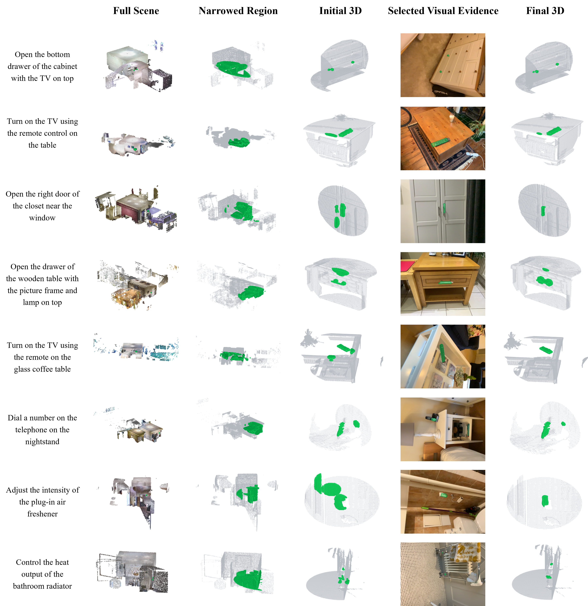

Additional Qualitative Results

Additional qualitative comparison on SceneFun3D. The full comparison includes generic open-vocabulary baselines and recent functionality-grounding methods. ActFun3D generally produces more compact and spatially aligned responses around fine-grained interaction regions, particularly for small targets and scenes containing multiple plausible candidates.

Additional visualizations of task-conditioned scene narrowing and multi-view refinement. The narrowed region preserves local task-relevant context while removing most irrelevant scene content. Selected visual evidence then suppresses unsupported responses and resolves residual ambiguity in the initial 3D prediction. The dynamic examples above provide video and interactive 3D versions of representative cases from this analysis.